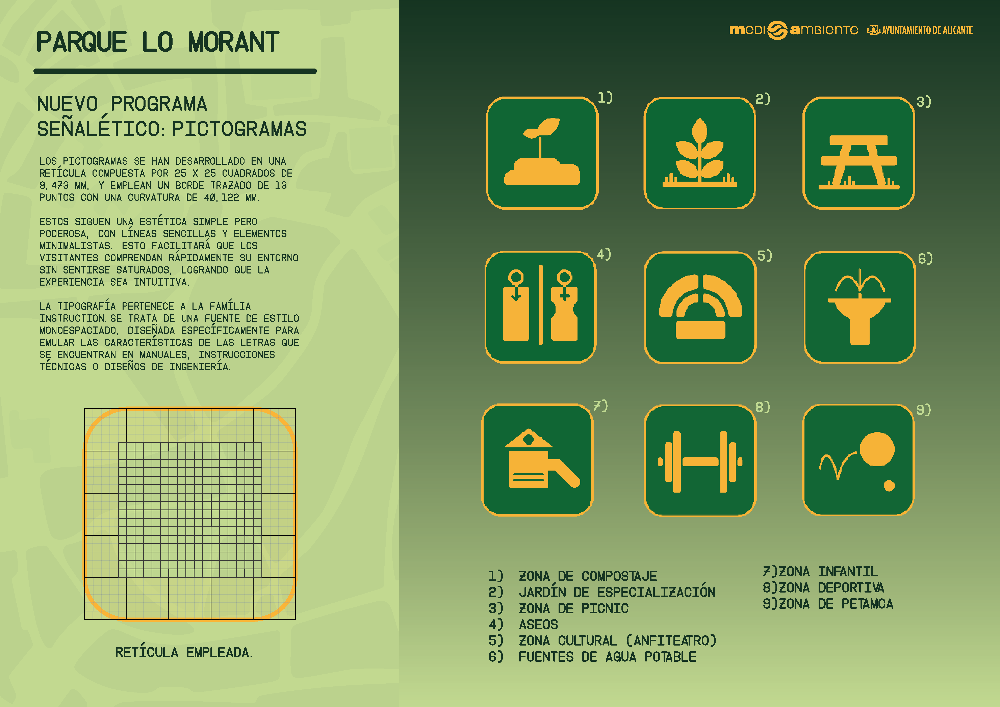
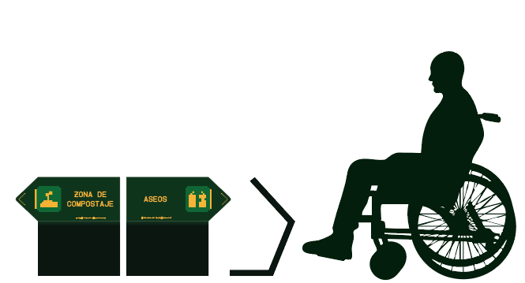
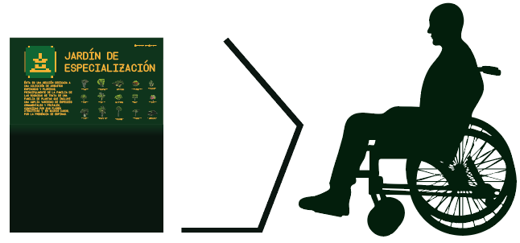
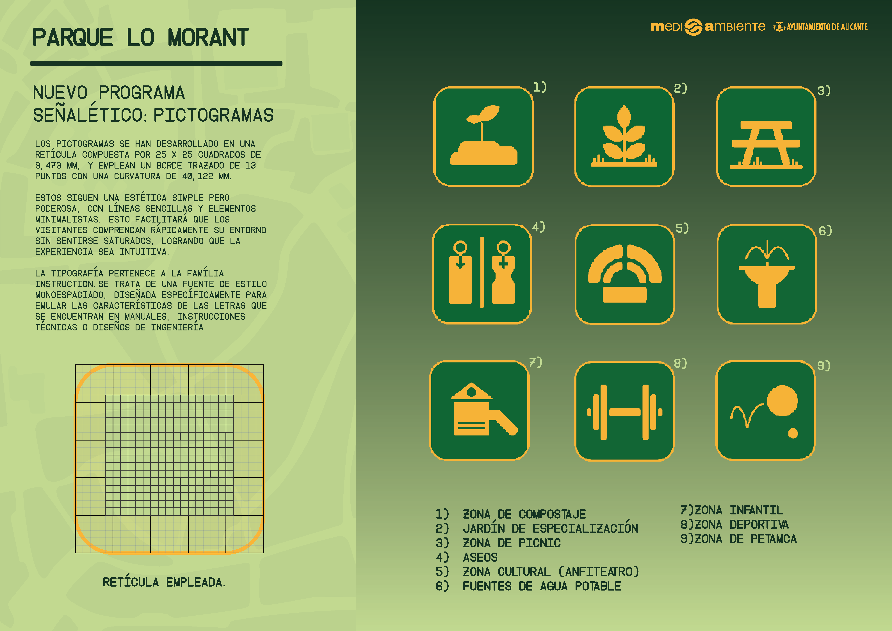
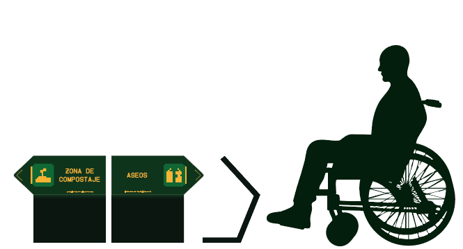
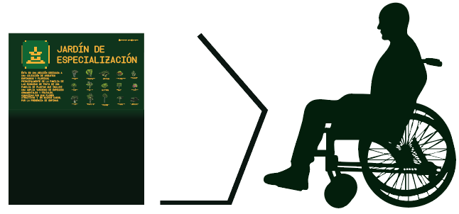
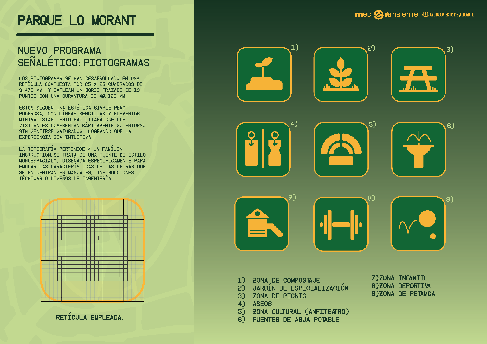
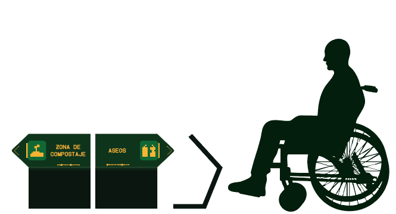
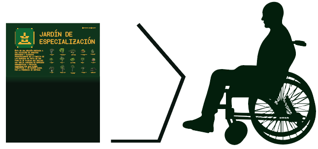

Proyecto de diseño para la renovación de la señalética del Parque Lo Morant, en Alicante. El trabajo consistió en actualizar los sistemas de orientación y comunicación visual del espacio, planteando señales claras y accesibles que mejoran la experiencia de los visitantes y la relación con el entorno natural del parque. Como parte del proyecto, se diseñó e instaló la señalética a lo largo de todo el parque y se elaboró un manual de aplicación que garantiza la coherencia gráfica y funcional de cada elemento, asegurando su correcta implementación y mantenimiento a futuro.


